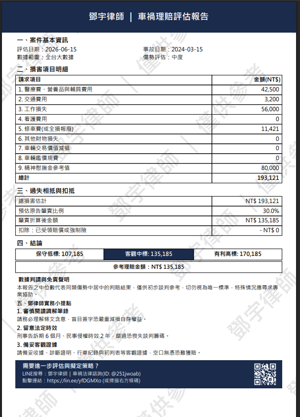

網路上還有別的車禍賠償計算機，我也實際用過，但大多數只給你一個數字，沒有說這個數字從哪來、依據是什麼。如果是談判對造看到這個數字，沒有任何東西可以佐證，說服力有限。
所以我決定自己做一個計算機。這套不一樣的地方在於：數字來自真實的法院判決，你可以直接對照同類傷勢的真實判決，找到跟自己情況最接近的案例當後盾，不論是拿來主張或是拿來抗辯都適用。
以下說明怎麼用，以及幾個使用前要知道的事。
一、使用流程
二、這個工具能算什麼
- 有人受傷：算精神慰撫金落點（大數據光譜）＋實支實付損失＋過失相抵後的參考求償金額，最後可以下載 PDF 評估報告。
- 純車損無人受傷：算修車折舊、全損報廢、其他衍生費用，同樣可以下載報告。
三、慰撫金光譜怎麼看
系統會給三個數字，對應同類傷勢判決的不同分位：
| 保守低標（Q1） | 客觀中標（Q2） | 有利高標（Q3） |
|---|---|---|
| 25th 百分位 | 中位數 | 75th 百分位 |
| 傷勢較輕微或 舉證較不充分 |
談判主要參考基準 | 傷勢較重或 舉證較充分 |
建議以 Q2 為起點，視個案情況調整，不要死守單一數字。調解的本質是各退一步，帶著數字上桌是為了讓你知道自己的底線在哪，不是為了加速談判破局。
四、資料怎麼來的
資料來源是司法院資料開放平台的公開判決，收錄 2025.09～2026.03 共 2,600+ 筆車禍民事案件（持續更新中），使用 AI 輔助從判決書中萃取傷勢描述、慰撫金金額等欄位後整理分類。計算光譜時排除統計上的極端值，取 Q1、Q2、Q3 呈現。
法院判賠金額受很多個案因素影響——法官心證、舉證品質、雙方態度、論述是否完整——同樣是骨折，不同案件的判決可能差距好幾倍。
這就是為什麼工具同時提供真實判決讓你對照：光譜給你方向，判決傷勢描述才能幫你確認自己落在哪個位置，甚至進一步找出類似判決幫自己主張。
另一件影響調解金額的事：刑事問題
車禍如果有人受傷，通常同時涉及民事賠償和刑事過失傷害兩個問題，而這兩件事往往在調解裡一起處理。
肇事者不在乎刑事前科的，傾向壓低金額；希望避免刑事紀錄的，談判籌碼就會體現在願意接受更高的調解金額。所以實際調解金額可能高於也可能低於光譜範圍，取決於雙方的籌碼和意願。
五、跟其他計算機最大的不同
大部分工具給你一個數字，但不告訴你依據是什麼。
這套系統會列出具代表性的真實判決，包含職業、傷勢描述、判賠慰撫金金額。你可以找跟自己診斷證明最相近的案例，作為談判時的具體依據，而不只是一個來路不明的數字。
六、PDF 評估報告
計算完成後可以下載 PDF，內容包含損害項目明細、過失相抵計算過程、三個參考數字、律師實務建議。可以直接帶去調解現場。PDF 報告是輔助工具，不能取代診斷證明、收據等實際證據本身，調解時還是要讓對方清楚看到你的證據。

七、什麼情況下建議找律師
- 傷勢屬於重大（截肢、癱瘓、脊髓損傷等）或死亡案件，或總求償金額超過50萬
- 對方否認肇事責任，或初判表認定有爭議
- 調解已經破局超過一次、對方態度強硬或惡劣，或對方已委託律師處理
・傷勢輕微（擦傷、挫傷、扭傷），雙方對肇責沒有爭議
・求償金額在10萬以內，對方有誠意協商
・調解進行中，只是需要一個數字參考
自己處理時，如果遇到任何疑慮，歡迎加 LINE 了解更多，加LINE不用付錢。
八、使用前要知道的事
- 數字是歷史判決落點，不是保證金額
- 個案差異大，同樣傷勢可能因各種因素而有不同結果
- 本工具不構成法律建議，複雜案件建議諮詢律師
準備好了嗎？
帶著數字上談判桌，讓判決說話。